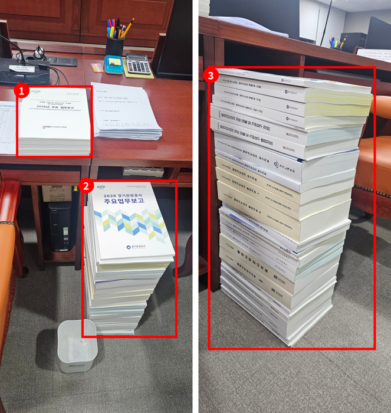

2026년 행정사무감사 질의서 (발언용 · 4분)
행감 자료, 이미 파일로 다 있는데
왜 또 책으로 찍습니까
문화체육관광위원회 황은화 위원 → 문화체육관광국장(국 공통 · 소관 공공기관)
| ① 이중 작업 | 요구자료 607건 답변이 이미 파일 1,161개로 제출됐는데, 같은 내용을 책자로 다시 인쇄 → 위원석 한 자리에 책자 20권 이상 |
|---|---|
| ② 다른 의회 사례 | 서울시의회: 행감 자료 제작비 약 3억 원 → 파일 제출 전환, 교육위 인쇄물 8천 부·A4 29만 장 절감 / 국회: 국감 인쇄물 연 약 40억 원 → 전자문서 원칙 법안 |
| ③ 공개와 연결 | 예산이 없어서가 아니라 안 써도 될 종이를 줄이자는 것 → 결재문서 공개 + 파일 제출 = 요구자료·인쇄·현장 부담 동시 감소 |
■ 발언 — 도입
국장님, 행정사무감사 자료 인쇄에 대해 여쭙겠습니다. [1번] 자료 띄워주시기 바랍니다. 올해 위원석 한 자리에 쌓인 행감 자료입니다. 주요업무보고와 요구자료 책자만 스무 권이 넘습니다. 오해 없으시길 바랍니다. 예산이 없으니 아끼자는 얘기가 아니라, 안 써도 되는 종이는 쓰지 말자는 겁니다.
[근거 1번 자료] 2026년 문화체육관광위원회 행정사무감사 배부 책자 (위원석 1곳)  1 경기콘텐츠진흥원 「2026년 주요 업무보고」 등 책자 묶음 2 「2026 경기관광공사 주요업무보고」를 비롯한 수감기관 책자 더미 3 같은 더미의 옆면 — 경기관광공사 행정사무감사 제출자료(공통·기관), 경기문화재단 행정사무감사 자료(공통 및 기관요구, 별첨), 경기도체육회 요구자료, 수원월드컵경기장관리재단 요구자료 Ⅰ·Ⅱ, 경기아트센터 행정사무감사 자료·별첨, 문화체육관광국 요구자료 등 20권 이상 → 문제점: 같은 답변이 파일로도 제출되는데, 위원 수만큼 책자로 다시 인쇄·제본·배부 ※ 출처: 문화체육관광위원회 회의실 위원석 촬영(2026. 11. 14.) |
▶ 질문 1 — 이미 파일로 다 있습니다
올해 우리 위원회 요구자료 607건에 대한 답변은 이미 파일로 1,161개가 들어왔습니다. 그런데 같은 내용을 다시 책으로 찍어서 위원마다 나눠 주셨습니다. 문화체육관광국 답변만 해도 발간본이 네 권입니다.
파일로 한 번 내고, 같은 걸 또 인쇄하고, 행감이 끝나면 다시 펼쳐 볼 일이 많지 않습니다. 국장님, 올해 행감 준비에 문화체육관광국과 산하기관이 쓴 인쇄비와 인쇄 부수, 파악하고 계십니까?
▷ "기관별로 집행해서 합계는 파악하지 못했습니다" → 그럼 국 전체로 얼마를 쓰는지 아무도 모르는 겁니다. 기관별로 모아서 제출해 주십시오. (예비 · 시간 남을 때)
[근거] 2026 행정사무감사 요구자료 답변 현황 (문화체육관광위원회) 1 요구자료 607건(1차 546·2차 49·3차 12) — 「_마스터색인.xlsx」 2 답변 파일 1,161개(1~3차, 수감기관별 폴더로 수령) — 같은 답변을 책자로도 배부 3 문화체육관광국 답변 발간본 1~4권 → 문제점: 파일 제출과 책자 인쇄가 겹치는 이중 작업 — 인쇄비·부수 합계는 확인되지 않음 ※ 출처: 바탕화면\26년행감요구자료(답변 파일 정리본), 「_마스터색인.xlsx」 안내 시트 |
▶ 질문 2 — 다른 의회는 이미 바꿨습니다
[2번] 자료 띄워주시기 바랍니다. 서울시의회는 행감 자료 제작비에만 3억 원 정도가 든다면서, 작년부터 업무보고를 파일로 받아 모니터로 보고 있습니다. 교육위원회는 답변서와 행감 책자를 전자우편과 USB로만 받아서, 인쇄물 8천 부, A4 용지 29만 장을 줄인다고 했습니다.
국회에서도 국정감사 기간 인쇄물에만 해마다 40억 원 정도가 든다는 지적이 나와, 전자문서를 원칙으로 하자는 법안이 발의됐습니다. 경기도는 행감 자료를 파일로 내고, 인쇄는 원하는 위원에게만 하는 방식을 검토해 본 적이 있습니까?
▷ "의회 요구에 따라 인쇄하고 있습니다" → 그럼 의회와 같이 바꾸면 됩니다. 집행부가 먼저 제안해 주십시오. (예비 · 시간 남을 때)
[근거 2번 자료] 다른 의회의 종이 절감 사례 1 서울시의회(2025. 2.) 서울시·교육청 연간 업무보고를 종이 대신 파일로 받아 본회의장 모니터로 송출. 의장은 집행부의 행정사무감사·결산 자료도 시와 협조해 대폭 줄이겠다고 밝힘 — 자료 제작비에만 약 3억 원이 드는 행감 방식 개선 2 서울시의회 교육위원회 요구자료 답변서, 주요업무보고, 행감 책자 인쇄를 줄이고 전자우편과 행감 시 USB로 제출 → 인쇄물 8,000부, A4 용지 약 29만 장 절감 전망 3 국회법 일부개정법률안(박지혜 의원 등 16인, 2024. 8. 9. 발의) 제안이유: 매년 국정감사 기간 종이 인쇄물 제작 비용 약 40억 원 → 회의 자료의 제출·보고·관리에 전자문서 원칙 사용, 종이문서 사용실태 조사·감축 계획 수립(안 제170조 신설) → 시사점: 의회와 집행부가 함께 바꾸면 비용·업무·탄소를 동시에 줄일 수 있음 ※ 출처: 뉴스1(파이낸셜뉴스) 2025. 2. 20. https://www.fnnews.com/news/202502201133482029 / 서울신문 2025. 2. 4. https://m.go.seoul.co.kr/news/2025/02/04/20250204500059 / 국민참여입법센터 국회법 일부개정법률안(2202674) https://opinion.lawmaking.go.kr/gcom/nsmLmSts/out/2202674/detailRP |
■ 마무리 · 요구사항
결재문서 공개와도 같은 얘기입니다. 계획서와 결과보고서가 공개돼 있으면 요구할 자료가 줄고, 파일로 받으면 찍을 종이가 줄어듭니다. 그만큼 현장 공무원들이 책자를 만들고 나르는 일도 줄어듭니다. 두 가지 요청드리겠습니다.
하나, 올해 행감 자료 인쇄비와 부수를 기관별로 정리해서 12월 중에 서면으로 제출해 주십시오.
둘, 내년 행감부터는 파일 제출을 기본으로 하고 인쇄는 원하는 위원에게만 하는 방안을, 의회사무처와 협의해서 내년 상반기 안에 보고해 주십시오.
참고: 예상 소요시간
| 구간 | 발언(음절) | 화면 | 답변 | 소계 |
|---|---|---|---|---|
| 도입 | 117 · 23초 | 5초 | - | 28초 |
| 질문 1 | 161 · 32초 | - | 20초 | 52초 |
| 질문 2 | 208 · 42초 | 5초 | 20초 | 1분 07초 |
| 마무리 · 요구사항 | 190 · 38초 | - | - | 38초 |
| 합계 | 676 · 2분 15초 | 10초 | 40초 | 3분 05초 |
※ 분당 300음절, 질문당 최소 답변 20초, 화면 전환 1회 5초 기준. 예비 재질의(▷)는 제외. 4분까지 약 55초 여유.